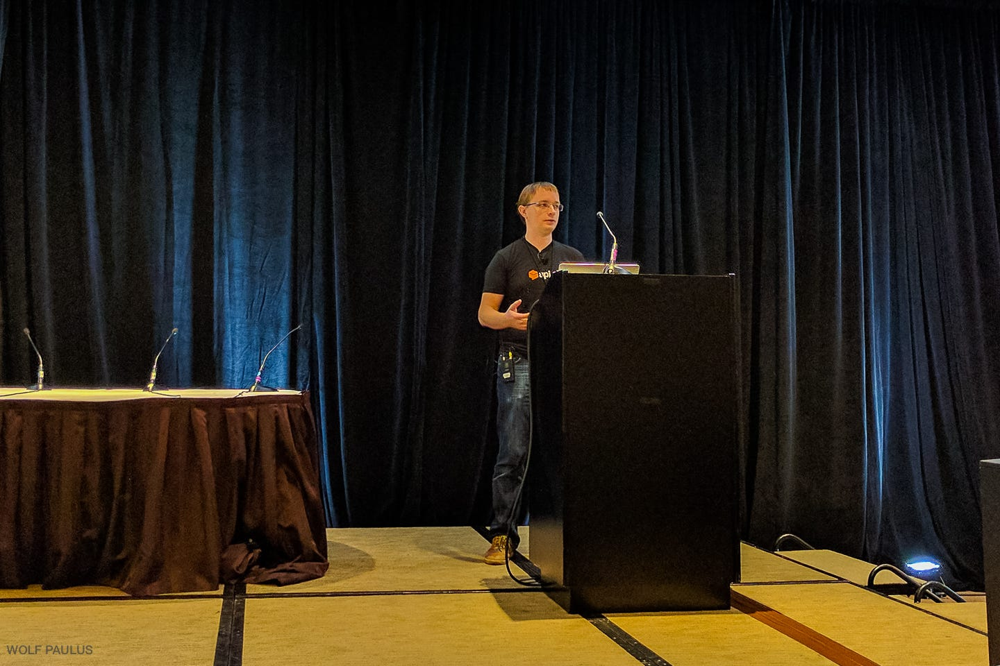
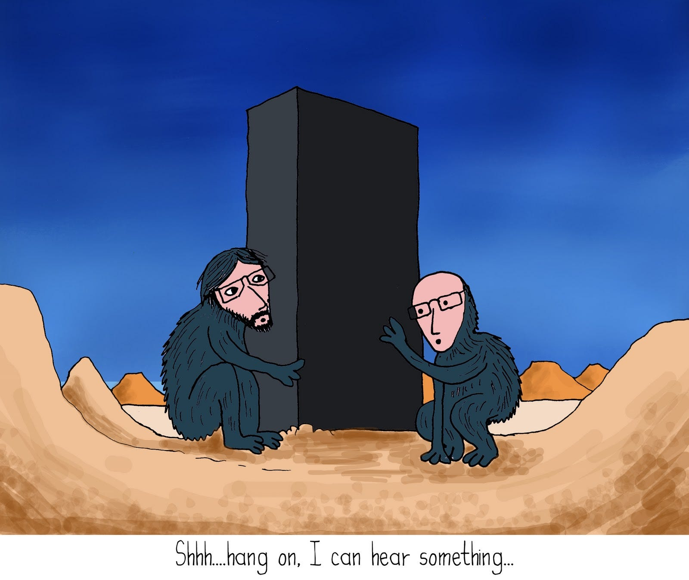

From AI-blackboxes to open standards
Answering Marc Canter’s Facebook post

Hi Marc, I share some thoughts about your questions/doubts in your Facebook post. I wish to say that’s a pretext to point out my general criticism about what I call AI-blackboxes (in general and not referring specifically to API.ai).
I copied here your points:
Is anybody here using API.ai?
Somebody just told me that Google changed the price to Zero?
But my friend is concerned they’ll eventually shut it down?
Thoughts? Beliefs? Experience?
…
I always felt that API.ai was a Google hedge — to get them into the market quickly.
But hearing that API.ai is free — is encouraging. They apparently have interfaces to Alexa, Slack, Facebook et al
Beforehand, let me state that:
I really like Ilya Gelfenbeyn’s API.ai NLP approach
API.ai have been one of first platforms (few years ago) working in that approach: machine learning actions/entities extractions from (croudsourced) intents.

Afterward a plenty of startups followed very similar NLP (Natural Language Processing) approach to build “machine learning” chatbots engines.
Just to mentions big players products/services very similar: many “AI” startups and big players as: Microsoft (with LUIS), Facebook (with acquired WIT.ai, very very similar to API.ai), Amazon (with Alexa/Lex), IBM (with Watson Conversation), etc. etc. etc.
Last but not least Google few months ago acquired API.ai that’s now a part of Google in Actions work in progress platform. BTW API.ai acquisition seems to me a workaround because probably Google actions/assistant strategy is still not fully defined (or simply technology is not ready to be published worldwide?), also in terms of commercial vision, whereas Alexa (by concurrent always growing Amazon) seems now winning with his #voicefirst device…
Now, what all above mentioned and similar platforms have in common?
1. Closed-source
These are proprietary products by (a short list of) big players: the source code is non published and even internal algorithms/behaviors are almost always fully obscure (Watson is a archetypal example of this closure, see my previous article: About IBM Watson-like systems).
I call these products(& services): “AI-blackboxes”
2. SaaS
SaaS (Software As As Service), the nowadays widespread cloud computing model, where your specific application client software call some external provider API (here for Application Programming Interface) to get some remote internet service from a server platform (in our case a NLP engine).
3. Pay per call
Pricing model is often something like: first N calls for free, with a successive “Let’s call” custom pricing or a old fashioned pay per usage (you pay X amount (thousandth of dollar) for each API call).
4. “Serverless”
Pretty all above mentioned players in new chatbots development realms, are beforehand cloud services providers companies, always looking for new customers. Serverless is a paradoxical buzzword here: cloud companies state to provide serverless services for mobile app (Android, iOS) developers and now for bots developers). That’s an Orwellian definition:
Serverless stands now for “mainframe paradigma”. Serverless instead would mean literally “distributed computing”!
I’m perplex regarding this trendy computing (and BUSINESS) model. I just mention two main points, without even mentioning to the huge ethics implications and concerns about privacy of data and people personal data collection & exploitation; forget it… let focus now in engineering aspects:
Server-centric or server-less?
The cloud server-centric model is not at all the definitive solution of all (chatbots) applications needs.
There are plenty of incoming possible chatbots applications related to internet of things (let’s think to automotive, smart-home, HW embedded devices, etc.), where probably
distributed computing model will “be back”
All devices will talk to us, they talk each others (#bots2bots machine-to-machine is probably a real AI frontiers, more than the machine intelligence in the General-AI meaning) and maybe data will be eventually collected in could-based servers, but
I’m hoping for a man-machine peer-to-peer networking and not for pervasive server-centric client-server businesses.
The need of opensource and open standards (in AI)
Seriously, I can’t imagine any modern scientific, technical and even humanistic evolution without open-source, let’s think about what linux has become in operating systems realms, or open standards and open source programming languages has become in software engineering last decades!
BTW, I have been for long time a C language (open standard and open source) developer and I am a Ruby language developer and, talking about chatbots… I’m now also modest supporter of ChatScript, one of few open source established (but underrated) projects to build NLP/conversational applications).
Earlier this 2017, we are in a ridiculous infancy of NLP platforms, where each one want to sell at the highest price his magic blackbox.
Business is business, ok, and I also think brand new lambda functions will probably gain great success in the near years.
Nevertheless, I feel that future (of human and machine intelligence) is in huge open source collaborations projects, where I would like to see big players (Google, Amazon, Apple, Facebook, etc.) to collaborate with a (new) open business models,
defining open standards and sharing (AI) algorithms.
To be specific (to chatbots development realms), I imagine a huge open standard (& open-source!) project to define a shared chatbot scripting language, possibly coupling human authoring and machine learning. Support of above mentioned (among others) companies in the direction of an open standard, will really change the games. In 2017 I will spend my little energy for that purpose.

Originally published on Medium.